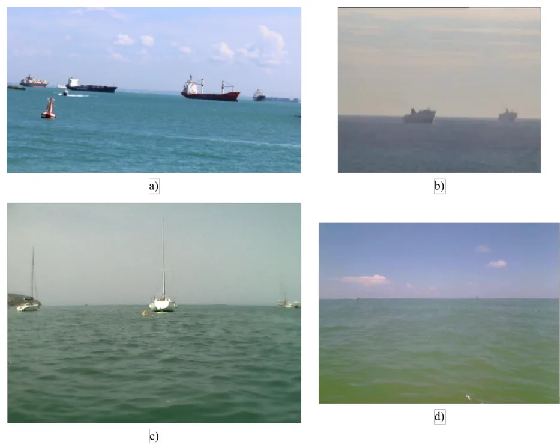
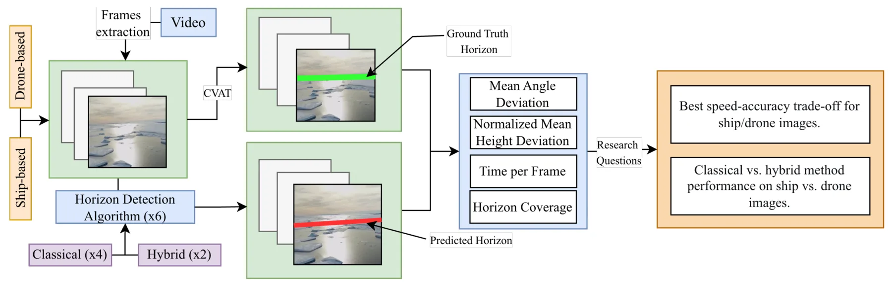
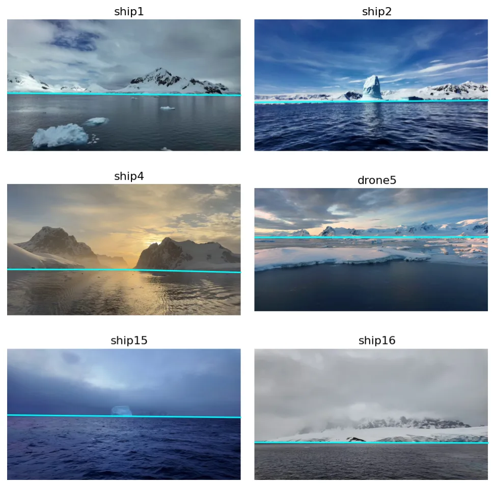
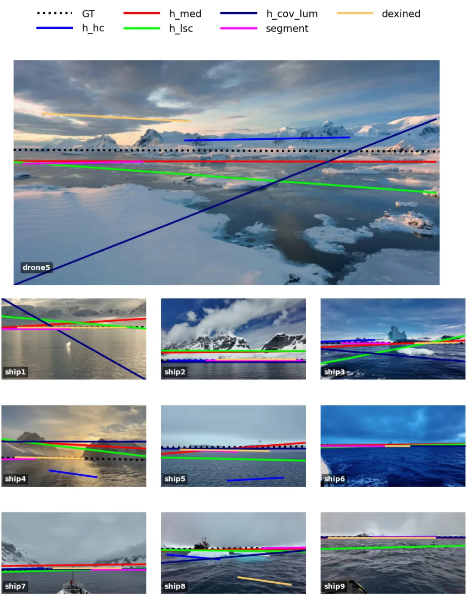
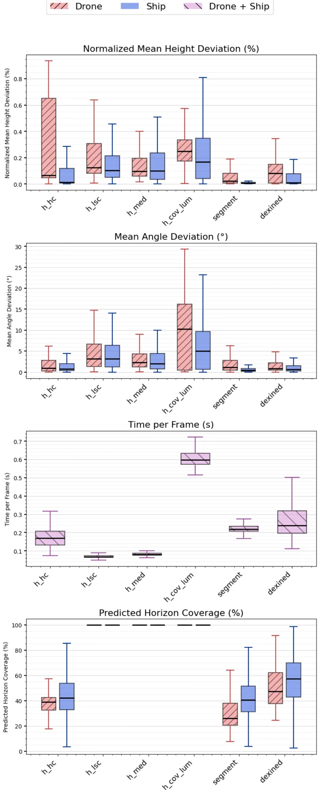
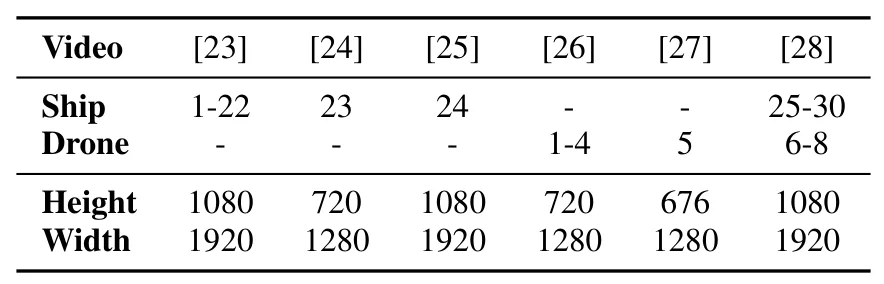
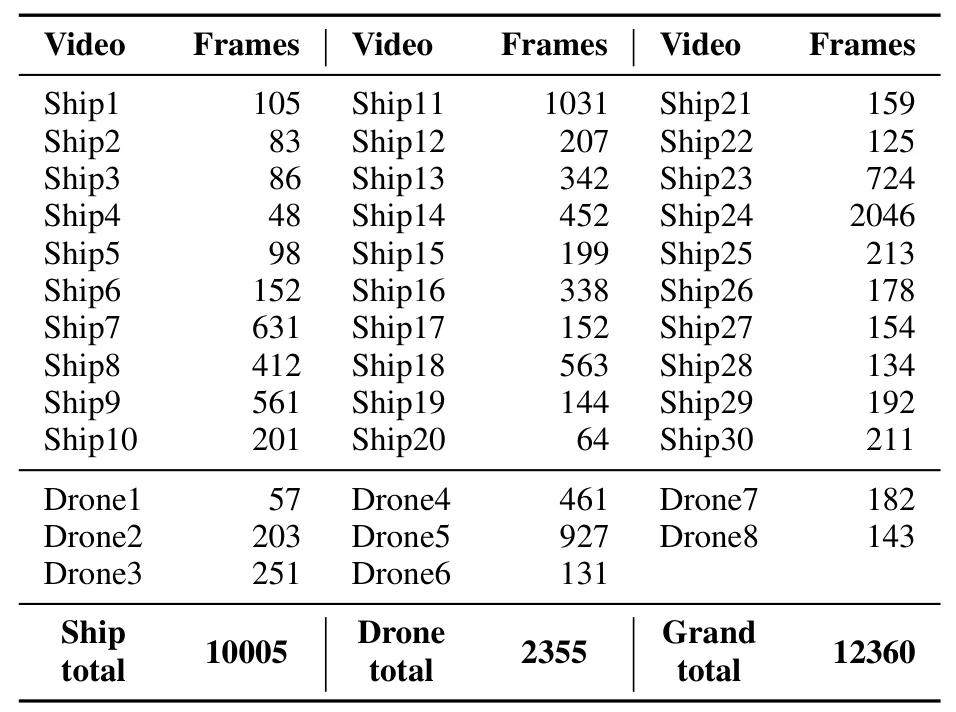
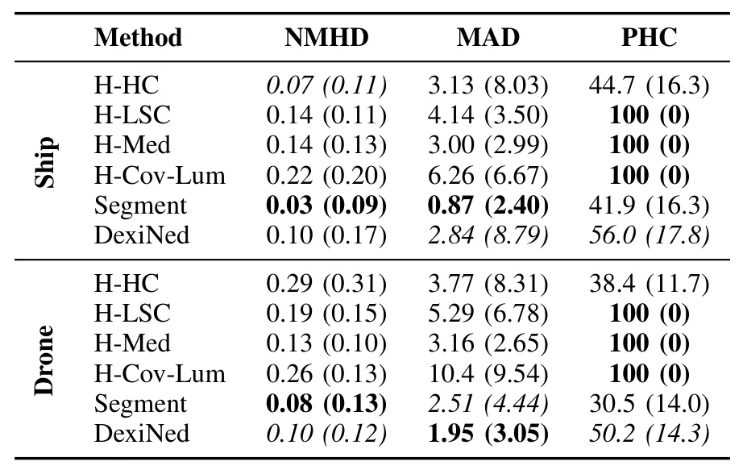

IceHorizon：冰覆盖海域地平线检测数据集与方法比较IceHorizon: A Dataset for Horizon Detection in Ice-Covered Maritime Environments and Comparative Evaluation of Detection Methods
对极地自主导航前端、姿态和视界辅助感知有数据价值，且代码数据公开；不是 SLAM、GNSS 或三维重建核心算法。
一句话工作总结
以船载和 UAV 冰区视频量化地平线检测，表明混合方法更稳健，也揭示不同采集平台带来的明显域差异。
摘要
IceHorizon 面向冰区海事导航中的低对比、冰体杂波和变化光照，提供由 30 段船载与 8 段无人机视频构成的数据集，并比较四种传统视觉方法和两种深度学习—经典直线检测混合方法。实验从准确率、地平线覆盖和计算性能评估，混合方法整体最准确、可靠；船载图像表现持续优于无人机图像，显示采集特性会显著影响方法性能。代码与数据均已给出公开地址。
Horizon detection in images of ice-covered waters is a challenging problem for maritime navigation due to low contrast between water and sky, cluttered ice structures, and varying illumination conditions. This paper presents a comparative evaluation of six horizon detection algorithms, including four classical computer vision methods and two hybrid approaches combining deep learning with classical line detection. A new bespoke IceHorizon dataset consisting of 30 ship-based and 8 drone-based videos is used to evaluate detection accuracy, horizon coverage, and computational performance. The results show that hybrid methods achieve the highest accuracy and most reliable horizon estimates. In contrast, purely classical methods exhibit reduced robustness, particularly in visually ambiguous scenes. Performance on ship-based imagery was consistently higher than on drone-based imagery, indicating a strong dependency on acquisition characteristics. The created dataset and codes used in this study are made publicly available to support further research on this topic. The code is available at https://github.com/allythe/HorizonDetection. The dataset is available at https://doi.org/10.5281/zenodo.20411867
中文解读摘录
图表/页面预览
{kind=link}

{kind=link}

{kind=link}

{kind=link}

{kind=link}

{kind=link}

{kind=link}

{kind=link}
